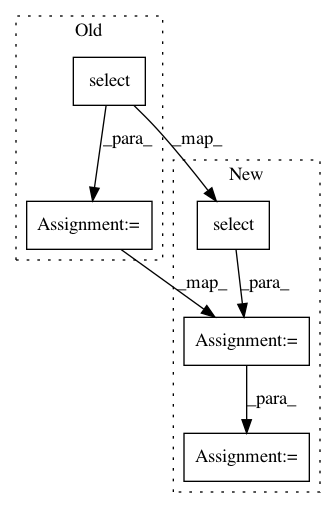

30703a7036f9bfd58ba23c2872887f1820ef928e,pudl/outputs.py,,fuel_ferc1_df,#Any#,94
Before Change
// Build a SELECT statement that gives us information from several different
// tables that are relevant to FERC Fuel.
fuel_ferc1_select = sa.sql.select([
pt["fuel_ferc1"].c.report_year,
pt["utilities_ferc"].c.respondent_id,
pt["utilities_ferc"].c.respondent_name,
pt["utilities_ferc"].c.util_id_pudl,
pt["plants_ferc"].c.plant_id_pudl,
pt["fuel_ferc1"].c.plant_name,
pt["fuel_ferc1"].c.fuel,
pt["fuel_ferc1"].c.fuel_qty_burned,
pt["fuel_ferc1"].c.fuel_avg_mmbtu_per_unit,
pt["fuel_ferc1"].c.fuel_cost_per_unit_burned,
pt["fuel_ferc1"].c.fuel_cost_per_unit_delivered,
pt["fuel_ferc1"].c.fuel_cost_per_mmbtu,
pt["fuel_ferc1"].c.fuel_cost_per_mwh,
pt["fuel_ferc1"].c.fuel_mmbtu_per_mwh]).\
where(sa.sql.and_(
pt["utilities_ferc"].c.respondent_id ==
pt["fuel_ferc1"].c.respondent_id,
pt["plants_ferc"].c.respondent_id ==
pt["fuel_ferc1"].c.respondent_id,
pt["plants_ferc"].c.plant_name ==
pt["fuel_ferc1"].c.plant_name))
// Pull the data from the DB into a DataFrame
fuel_df = pd.read_sql(fuel_ferc1_select, pudl_engine)
After Change
// Grab the list of tables so we can reference them shorthand.
pt = models.PUDLBase.metadata.tables
fuel_ferc1_tbl = pt["fuel_ferc1"]
fuel_ferc1_select = sa.sql.select([fuel_ferc1_tbl, ])
fuel_df = pd.read_sql(fuel_ferc1_select, pudl_engine)
// We have two different ways of assessing the total cost of fuel given cost
// per unit delivered and cost per mmbtu. They *should* be the same, but we
// know they aren"t always. Calculate both so we can compare both.
fuel_df["fuel_consumed_total_mmbtu"] = \
fuel_df["fuel_qty_burned"] * fuel_df["fuel_avg_mmbtu_per_unit"]
fuel_df["fuel_consumed_total_cost_mmbtu"] = \
fuel_df["fuel_cost_per_mmbtu"] * fuel_df["fuel_consumed_total_mmbtu"]
fuel_df["fuel_consumed_total_cost_unit"] = \
fuel_df["fuel_cost_per_unit_burned"] * fuel_df["fuel_qty_burned"]
pu_ferc = plants_utils_ferc_df(pudl_engine)
out_df = pd.merge(fuel_df, pu_ferc, on=["respondent_id", "plant_name"])
out_df = out_df.drop("id", axis=1)
out_df = out_df[[
"report_year",
"respondent_id",
"respondent_name",
"util_id_pudl",
"plant_name",
"plant_id_pudl",
"fuel",
"fuel_unit",
"fuel_qty_burned",
"fuel_avg_mmbtu_per_unit",
"fuel_cost_per_unit_burned",
"fuel_cost_per_unit_delivered",
"fuel_cost_per_mmbtu",
"fuel_cost_per_mwh",
"fuel_mmbtu_per_mwh",
"fuel_consumed_total_mmbtu",
"fuel_cost_per_mmbtu",
"fuel_cost_per_unit_burned",
]]
return(out_df)
In pattern: SUPERPATTERN
Frequency: 4
Non-data size: 5
Instances
Project Name: catalyst-cooperative/pudl
Commit Name: 30703a7036f9bfd58ba23c2872887f1820ef928e
Time: 2017-09-25
Author: zane.selvans@catalyst.coop
File Name: pudl/outputs.py
Class Name:
Method Name: fuel_ferc1_df
Project Name: sahana/eden
Commit Name: 301cdf2643b1b847dc0b97e35e0a937236ff39ad
Time: 2020-04-08
Author: fran@aidiq.com
File Name: modules/templates/CCC/controllers.py
Class Name:
Method Name: auth_user_register_onaccept
Project Name: catalyst-cooperative/pudl
Commit Name: 30703a7036f9bfd58ba23c2872887f1820ef928e
Time: 2017-09-25
Author: zane.selvans@catalyst.coop
File Name: pudl/outputs.py
Class Name:
Method Name: plants_steam_ferc1_df
Project Name: prody/ProDy
Commit Name: d7c06df64cf8395df9f8b96f7d7a8c384c148718
Time: 2018-03-28
Author: shz66@pitt.edu
File Name: prody/ensemble/dali.py
Class Name: daliRecord
Method Name: buildDaliEnsemble